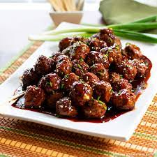

Teriyaki Meatballs

Teriyaki Meatballs Recipes
These turkey teriyaki meatballs are juicy and and so flavorful with a homemade teriyaki glaze. They come together
quickly making them an easy dinner idea for a busy weeknight. Try them over a bed of steamy rice or with toothpicks
as an appetizer. Baking the teriyaki meatballs at a higher temperature seals in the natural juices and produces
wonderfully soft meatballs that are healthier than frying. You can easily double this recipe to feed a crowd.
Ingredients
Teriyaki Meatballs ingredients:
- 16 oz lean ground turkey
- 1/2 cup panko bread crumbs
- 1/4 cup green onion, finely chopped
- 1 large egg
- 1 tsp freshly grated ginger or 1/4 tsp ground ginger
- 1 garlic clove, pressed
- 2 tsp sesame oil
Teriyaki sauce ingredients:
- 1/4 cup light brown sugar, lightly packed
- 2 Tbsp hoisin sauce
- 1 Tbsp soy sauce
- 1/2 Tbsp sesame oil
- 1 medium garlic clove, minced
- 1/2 tsp fresh ginger or 1/8 tsp ground ginger
Instructions
- Line a 17x12 rimmed baking sheet with Reynolds Wrap® Aluminum Foil. Pre-heat oven to 400˚F.
- Combine meatball ingredients in a large bowl: 16 oz ground turkey, 1/2 cup bread crumbs, 1/4 cup green onion, 1
egg, 1 tsp fresh ginger, pressed garlic clove and 2 tsp sesame oil. Use your hands or a spoon to mix just until
combined.
- Roll into 1 1/4" to 1 1/2" meatballs and bake at 400 for 10 to 12 mins or until juices run clear or a meat
thermometer reads 170˚F. Meanwhile, make the sauce.
- Simmer the sauce ingredients together in a small sauce pan for 3-5 minutes, stirring frequently or until
slightly thickened.
- Transfer warm meatballs to a mixing bowl, drizzle with warm sauce and toss to combine.
Shortcut: To store leftover teriyaki meatballs, wrap them in foil and refrigerate.